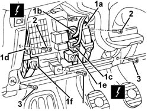
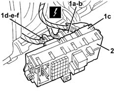
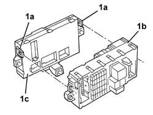

5505A10 electrical junction unit - r+r
- Path
- Procedures > 55 ELECTRICAL EQUIPMENT > 5505 ELECTRICAL CIRCUIT FOR INSTRUMENTS/INDICATORS > 5505A multi-function components > 5505A10 electrical junction unit - r+r
- Kind
- repair procedure (removal / refitting; the operation number is the code)
- Applies to
- all engines; all production periods
- Interactive page
- https://sloeber94.github.io/elrnDB-a147/en/#/3025480
Applies to: all engines; all production periods
 Removing
Removing
 Refitting
Refitting1. Disconnect the electrical connections at the front (1a, 1b, 1c, 1d, 1e, 1f).
 | Name | Connector |
|---|---|---|
1a | Junction unit under dashboard |
| Name | Connector |
|---|---|---|
1b | Junction unit under dashboard |
| Name | Connector |
|---|---|---|
1c | Junction unit under dashboard |
| Name | Connector |
|---|---|---|
1d | Junction unit under dashboard |
| Name | Connector |
|---|---|---|
1e | Body computer |
| Name | Connector |
|---|---|---|
1f | Body computer |
2. Undo the bolts fixing the control unit.
3. Undo the bolts shown fixing the dashboard cover.

Applies to: all engines; all production periods
1. Move the control unit/body computer assembly slightly and disconnect the electrical connections at the rear (1a, 1b, 1c, 1d, 1e, 1f).
| Name | Connector |
|---|---|---|
1a | Junction unit under dashboard |
| Name | Connector |
|---|---|---|
1b | Junction unit under dashboard |
| Name | Connector |
|---|---|---|
1c | Junction unit under dashboard |
| Name | Connector |
|---|---|---|
1d | Body computer |
| Name | Connector |
|---|---|---|
1e | Body computer |
| Name | Connector |
|---|---|---|
1f | Body computer |
2. Recover the control unit/body computer assembly.

Applies to: all engines; all production periods
1. Work at the bench and release the retainers (1a) , separate the junction unit (1b) from the body computer.

Applies to: all engines; all production periods
Refitting
RemovingCheck that the junction unit is not damaged and, if necessary, check the internal connections.
At the bench, connect the junction unit from the body computer and attach the retainers.
Connect the rear electrical connections.
Position the junction unit.
Tighten the screws.
Connect the front electrical connections.
Test the electrical system.
Topics linked from this page (13)
- 7040A37 fuse box cover - r r
- B2A Junction unit under dashboard ( Connectors )
- B2B Junction unit under dashboard ( Connectors )
- B2C Junction unit under dashboard ( Connectors )
- B2D Junction unit under dashboard ( Connectors )
- B2F Junction unit under dashboard ( Connectors )
- B2G Junction unit under dashboard ( Connectors )
- B2H Junction unit under dashboard ( Connectors )
- M1A Body computer ( Connectors )
- M1B Body computer ( Connectors )
- M1C Body computer ( Connectors )
- M1D Body computer ( Connectors )
- M1E Body computer ( Connectors )
Topics that link to this page (16)
- J20 REARSCREEN AND DOOR MIRROR DEFROSTING NOT WORKING
- 1068A20 accelerator pedal with built-in potentiometer - r r
- 5040A80 expansion/connection pipe - r r
- 5040B30 expansion valve (tube orifice) - r+r
- 5040C10 air conditioner box - r+r
- 5040C15 air conditioner housing - r r with facia disconnected for versions with passenger airbag
- 5040C50 air conditioner heater radiator - r+r
- 5040C64 a/c evaporator - r+r
- 5040D84 air conditioner left hand air mixer flap control motor - r r
- 5040D90 air conditioner system wiring bundle - r r
- 5505A32 body computer - r r
- 5505A33 body computer - r r with junction unit removed
- 5505C28 intergrated engine bay and abs system wiring - r r
- 5505C34 intergrated instrument under facia front air bag wiring - r r
- 7040A97 facia trim support beam - r r
- 7040A98 instrument facia trim support beam - r r with facia removed